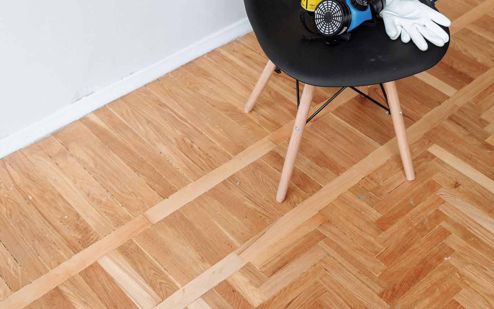

Poser un parquet flottant, étape par étape
Le tutoriel de référence : de la sous-couche aux plinthes, avec les points de contrôle.
Tutoriels
Des déroulés de chantier détaillés, avec l'outillage nécessaire, les points de contrôle et les erreurs qui coûtent cher.
Le tutoriel de référence : de la sous-couche aux plinthes, avec les points de contrôle.

La pose la plus stable et la plus silencieuse — et la moins tolérante à l'improvisation.

Une heure de traçage évite deux jours de rattrapage.
Ce que vous trouverez
Tous suivent la même trame, pour que vous puissiez travailler avec la page ouverte à côté de vous.
Avant de commencer
Le sens de pose et le motif se décident sur le papier, mais se jugent à l’œil. Essayez-les sur une photo de votre pièce.
Décrivez votre pièce, votre support et le rendu recherché en cinq étapes. Vous recevez une réponse construite, sans démarchage.